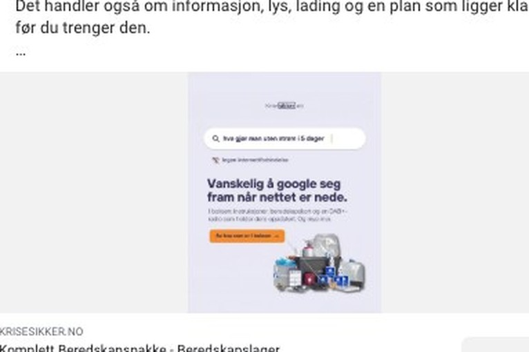
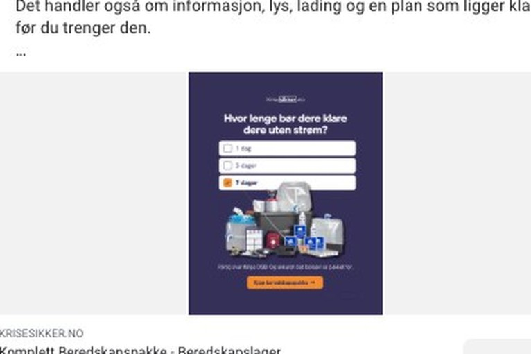
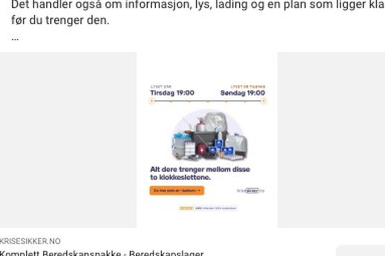

Meta-annonsene som viser en konkret situasjon vinner
Av de 8 bildeannonsene som startet 14. oktober har Meta gitt nesten all visning til disse fire. Alle viser noe man kan se for seg: nettet er nede, 14 kg, hvor lenge dere klarer dere, en uke på en tidslinje. Annonsene om «1500+ hjem» og anmeldelser har knapt fått visning.




Karusellen «En uke uten strøm» er den sterkeste ideen dere har. Den er konkret og rolig og slutter med «Dere klarte uka», helt uten skremsel. Den fortjener å bli en video og en hel serie.

Google har stått stille lenge
Hovedannonsen «Norges Beste Beredskapsboks» har gått med samme tekst siden april 2025. Dere har mye sterkere ting å si: 4,8 av 5 fra 187 anmeldelser, over 1 500 norske hjem, DSBs liste for 7 dager, gratis frakt og 30 dagers åpent kjøp.

Nødradioen er ikke med i annonsene
Dere har ingen annonser for nødradioen. Konkurrenter som Trygghetslagret, Sikkerhetslageret og Beredskapskompaniet har til sammen minst 25 aktive nødradio-annonser på Meta akkurat nå. Det er en enkel mulighet å ta.
Det vi ville startet med
- Ny tekst på Google. Ut med «Norges beste», inn med fakta dere faktisk kan stå for, og test dem mot hverandre.
- Nødradioen ut i annonser. En egen søkekampanje på Google og egne annonser på Meta, gjerne med «1 hjemme + 1 på hytta».
- Mer av det som funker på Meta. Flere konkrete situasjoner, «En uke uten strøm» som video, kortere UGC-klipp og en julegave-vinkel før jul.
Vi vil gjerne jobbe med dere
Vi synes Krisesikker er et skikkelig kult prosjekt. Dere har et produkt folk faktisk trenger, en tydelig og rolig tone, gode anmeldelser og en historie som starter ved et kjøkkenbord. Det er et godt utgangspunkt for annonser.
Vi tror det er mye å hente, både på Google og Meta, og vi har lyst til å være med på veien videre. Neste steg er at vi får lesetilgang til kontoene. Da kan vi vise konkret hvor budsjettet gir mest.
Hilsen Victor, Arcads
Book en ny prat